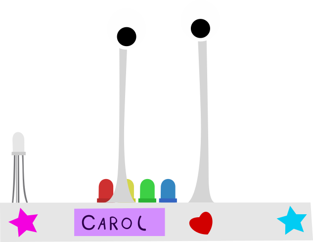

El nombre de Carol viene de la saga de videojuegos Portal, de hecho, si todavía no la has jugado y pretendes hacerlo, será mejor que no lo leas.
Mi idea era llamarla GLaDOS, que es un robot que, junto a Chell, protagoniza la saga. Pero esta idea me parecía demasiado poco original, después, se me ocurrió llamarla Caroline, ya que GLaDOS es una copia de la personalidad de una mujer llamada Caroline, después simplemente acorté el nombre para hacerlo un poco diferente.